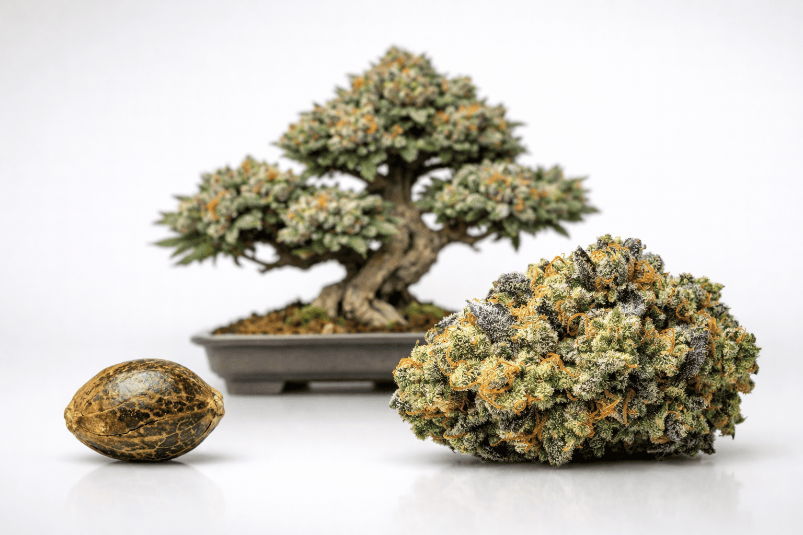
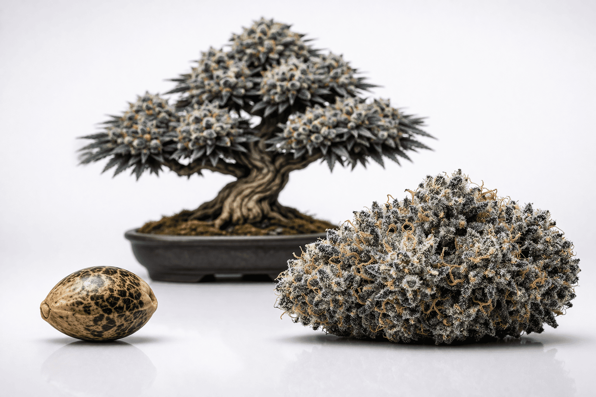
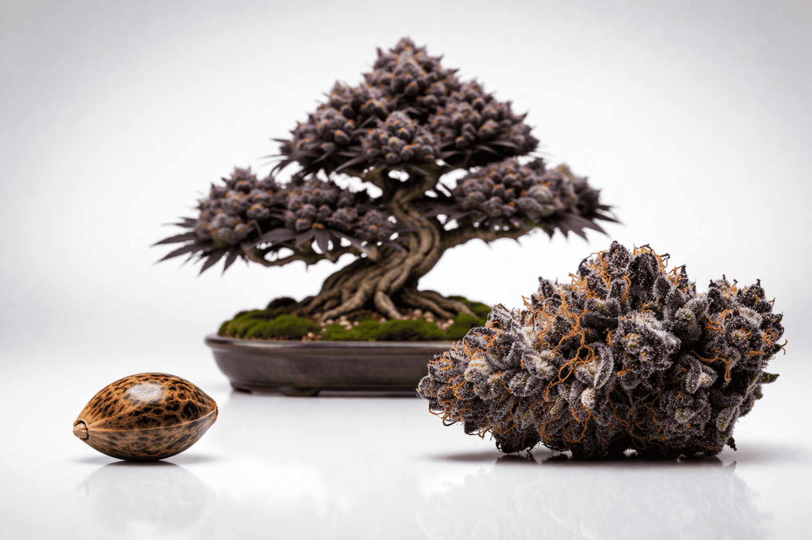
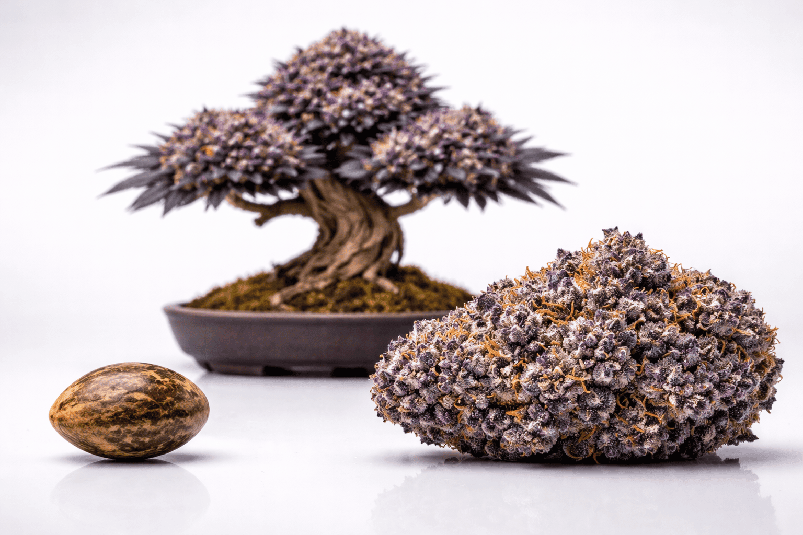
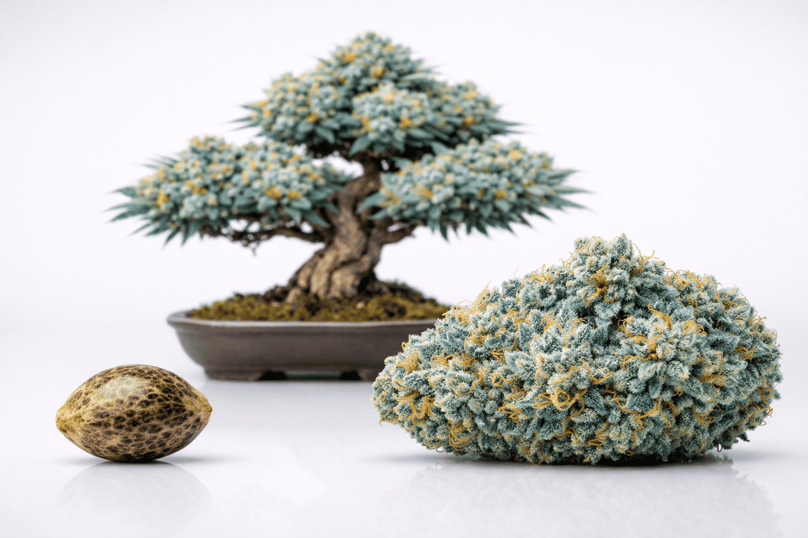

Pourquoi les feuilles de cannabis jaunissent : Le diagnostic expert
Voir ses feuilles de cannabis virer au jaune est l'angoisse numéro un de tout cultivateur. Pourtant, la chlorose n'est pas une fatalité : c'est un langage. Votre plante essaie de communiquer un déséquilibre précis. Avant de paniquer et de vider vos bouteilles d'engrais, il est crucial d'apprendre à lire ces signaux. Décryptage des causes principales et de leurs solutions.

1. La carence en azote : Le grand classique
C'est la cause la plus fréquente, surtout en phase de croissance végétative. L'azote est un nutriment mobile. Lorsque la plante en manque pour développer ses nouvelles pousses, elle va littéralement pomper l'azote des vieilles feuilles situées en bas de la canopée.
Le diagnostic : Le jaunissement commence par les feuilles les plus basses et les plus anciennes. Elles pâlissent, jaunissent uniformément, puis finissent par tomber d'elles-mêmes. Le haut de la plante reste vert.
La solution : Augmentez progressivement votre apport en engrais de croissance (Grow). Attention cependant à ne pas surdoser : un excès d'azote en floraison bloquera le développement des têtes.

2. Le sur-arrosage : L'erreur silencieuse
Les cultivateurs débutants ont tendance à trop aimer leurs plantes. Un substrat constamment détrempé empêche les racines de respirer. Sans oxygène, les racines suffoquent, pourrissent, et ne peuvent plus assimiler les nutriments, même s'ils sont présents en abondance.
Le diagnostic : Les feuilles jaunissent, mais contrairement à une carence, elles sont lourdes, tombantes et gonflées d'eau. La plante entière semble fatiguée et affaissée.
La solution : Laissez sécher votre substrat. Soulevez vos pots : s'ils sont lourds, n'arrosez pas. Attendez que les premiers centimètres de terre soient secs avant le prochain arrosage.
"Une plante de cannabis se remettra toujours plus vite d'un sous-arrosage sévère que d'un sur-arrosage chronique. L'oxygène racinaire n'est pas une option."

3. Le blocage des nutriments (Fluctuations du pH)
Vous donnez les bons engrais, mais vos feuilles jaunissent quand même ? Le coupable est souvent le pH. Si le pH de votre eau ou de votre substrat est hors de la plage idéale, les racines subissent un "lockout" : les nutriments se lient chimiquement et deviennent indisponibles pour la plante.
Le diagnostic : Le jaunissement est souvent irrégulier, accompagné de taches, de brûlures sur les bords ou de décolorations étranges. Plusieurs carences semblent apparaître en même temps.
La solution : Calibrez votre testeur pH. En terre, maintenez l'eau d'arrosage entre 6.0 et 6.5. En hydroponie ou coco, visez entre 5.5 et 6.0. Si le substrat est trop acide ou basique, un rinçage (flush) à l'eau claire au bon pH peut réinitialiser la zone racinaire.

4. Le stress lumineux et thermique
Les lampes LED modernes sont extrêmement puissantes. Placée trop près de la canopée, la lumière peut littéralement décolorer la chlorophylle, un phénomène appelé "light burn".
Le diagnostic : Contrairement à la carence en azote, le jaunissement frappe uniquement les feuilles les plus hautes, celles directement exposées à la lumière. Les feuilles peuvent devenir presque blanches, tandis que les nervures restent parfois vertes. Les bords se recroquevillent souvent vers le haut (en forme de canoë) pour tenter de dissiper la chaleur.
La solution : Remontez vos lampes ou diminuez leur intensité (dimmer). Assurez-vous également que la température au niveau de la canopée ne dépasse pas 28°C.

Le jaunissement des feuilles n'est jamais un hasard. Prenez le temps d'observer l'emplacement des feuilles touchées (haut ou bas), leur texture (sèche ou gonflée) et vérifiez toujours vos paramètres de base (pH, arrosage, distance lumineuse) avant d'ajouter des engrais. Un bon cultivateur est avant tout un bon observateur.